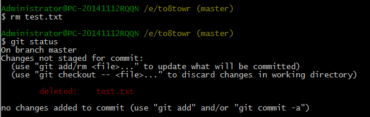
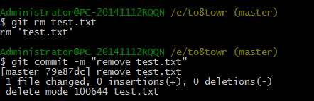

删除文件
在Git中，删除也是一个修改操作，我们实战一下，先添加一个新文件test.txt到Git并且提交：
$ touch test.txt
$ git add test.txt
$ git commit –m “add test.txt”
一般情况下，你通常直接在文件管理器中把没用的文件删了，或者用rm命令删了：
$ rm test.txt
这个时候，Git知道你删除了文件，因此，工作区和版本库就不一致了，git status 命令会立刻告诉你哪些文件被删除：
现在你有两个选择，一是确实要从版本库中删除该文件，那就用命令 git rm 删除，并且 git commit
现在，文件就从版本库中删除了
另一种情况是删错了，因为版本库里还有呢，所以可以很轻松地把误删的文件恢复到最新版本：
$ git checkout -- test.txt
$ git checkout -- test.txt 其实是用版本库里的版本替换工作区的版本，无论工作区是修改还是删除，都可以“一键还原”。
小结：
命令 git rm 用于删除一个文件。如果一个文件已经被提交到版本库，那么你永远不用担心误删，但是要小心，你只能恢复文件到最新版本，你会丢失最近一次git add后你修改的内容。